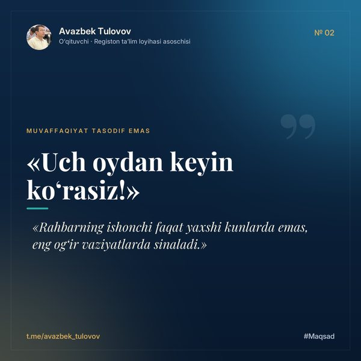

Maqolalar
Registon hikoyalari va fikrlar
Jami 3 ta maqola. Har kuni bittadan yangisi qo‘shiladi.

№ 01 · 17-noyabr, 2026
Bugungi Registon qayerdan boshlangan?
2013-yil. Toshkent. Ijara uyimizda abituriyentlarga dars berardim. O‘quvchilarimiz ko‘payib, joy yetmay qoldi. Yangi partalar sotib olishga imkoniyatimiz yo‘q edi. Shogirdim Alisher bilan Yangiobod…

№ 02 · 16-noyabr, 2026
«Uch oydan keyin ko‘rasiz!»
2023-yil, 17-may. Toshkentdagi birinchi Registon maktabining oltinchi qavatida turibman. Atrofimda beton ustunlar, qurilish materiallari. Jazirama issiq. Binoning maktabga o‘xshaydigan joyi hali juda…

15-noyabr, 2026
Mo‘ljalimiz nima?
2023-yil, may oyi. Registon maktabining qurilishi davom etayotgan edi. Derazadan qarasam, ro‘paramizda shahardagi eng mashhur, hashamatli to‘yxonalardan biri — «Versal» ko‘rinib turardi. Kimdir…